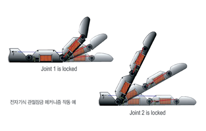
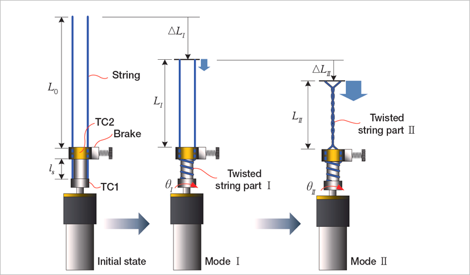

주제별 연구성과
주제별 연구성과
KAIST RESEARCH ACHIEVEMENTS
인간처럼 정교한
손작업이 가능한 로봇핸드
기계공학과 김경수
요약
각종 사고 및 질병(특히 당뇨병)으로 인한 손(또는 손가락)의 기능을 상실한 장애인의 수가 점차로 증가하는 추세이다. 2033년, 이러한 장애인들이 한국을 방문하여, '고자유도를 갖는 인간형 로봇핸드' 시술을 받고, 행복한 정상적인 삶으로 복귀한다.
연구내용

로봇설계 기술, 그리고 인체의 생체신호 감지 기술이 발전함에 따라, 사람의 의도에 따라 구동되는 의수 연구가 활발히 진행되고 있다.그러나 인간의 손은 매우 정교한 기능을 가지며, 이를 모방한 로봇핸드의 개발은 가장 어려운 숙제 중의 하나이다. 이러한 로봇핸드의 성능은 구동기 및 구동 메커니즘에 매우 의존적이며, 전 세계의 많은 연구개발 결과에도 불구하고, 구동기의 한계로 인간의 손에 버금가는 로봇핸드는 개발되지 못했다. 첨단 로봇의수를 위해서는 구동계 설계 및 제어에 있어서 한계를 돌파하기 위한 혁신적인 아이디어가 필요하다.
 그림 2. 5손가락 로봇의수 설계 및 응용 예 [오른쪽] 3손가락 폭발물해체용 로봇핸드
그림 2. 5손가락 로봇의수 설계 및 응용 예 [오른쪽] 3손가락 폭발물해체용 로봇핸드
로봇핸드(인공 손)는 의학계 및 산업계 등의 요구에 따라 1900년대부터 개발되었다. 그러나 인간의 손에 버금가는 로봇핸드가 개발되지 못한 이유는 전기모터, 공압/유압 등 현실적으로 사용가능한 구동기가 인간 근육과 비교하여, 지나치게 무겁고 크며, 정교한 제어에 한계가 있기 때문이다.
 그림 3. 다중모드 줄꼬임 구동
본 연구에서는 '다중모드 줄꼬임 구동 방식'과 '전자기식 관절잠금 메커니즘'을 세계 최초로 제안하여, 기존 연구개발에서의 성능한계를 극복할 수 있는 방안을 제시하였다. 다중모드 줄꼬임 구동은 두 개의 줄을 꼬면서 발생하는 강한 수축력을 이용하는 일종의 초경량 토크-힘 변환장치로 '고출력 힘모드'와 '고속 운동모드'를 유연하게 운용하며, 로봇손가락의 초경량, 고출력, 고속운동을 가능하게 한다. 또한 전자기식 관절잠금 메커니즘은 최소의 소비전력으로 관절의 운동을 효과적으로 제어함으로써, 한 개의 구동기에도 불구하고, 다관절 로봇핑거가가질 수 있는 다자유도 운동을 가능하게 한다. 제안된 구동메커니즘의 우수한 특징에 따라, 본 연구에서 개발된 인간형 로봇핸드는 사람의 손과 유사한 무게 및 크기에도 불구하고, 매우 높은 악력(쥐는 힘), 빠른 운동 그리고 높은 자유도 운동을 가진다.
기대효과
본 연구는 기존의 모터 및 기어를 이용하는 구동기 설계방법에서 벗어나, 경량 고출력의 다중 줄꼬임 구동방법을 새로이 제시한 점이 중요한 의미를 갖는다. 특히, 이를 이용하여, 고자유도의 경량 로봇핸드를 개발함으로써 인간과 유사한 정교한 작업이 가능하도록하였으며, 이는 재활을 위한 로봇의수 및 군의 특수위험물 해체 등과 같은 정교한 작업을 필요로 하는 첨단 로봇장비에 활용이 기대된다.
연구지원
ㆍYoung June Shin, Ho Ju Lee, Kyung-Soo Kim, and Soohyun Kim "A Robot Finger Design Using a Dual- Mode Twisting Mechanism to Achieve High-Speed Motion and Large Grasping Force", IEEE TRANS ON ROBOTICS, 28(6), 1398-1405(2012)
ㆍHo Ju Lee, Young June Shin, Kyung-Soo Kim, Soohyun Kim "Finger Module Design based on Dualmode Twisting Actuation for Explosive Ordnance Disposal Gripper", 44th International Symposium on Robotics(2013)
ㆍ국내특허등록: "줄꼬임 구동(Twisted String Actuation)을 이용한 듀얼 모드 구동 메커니즘"